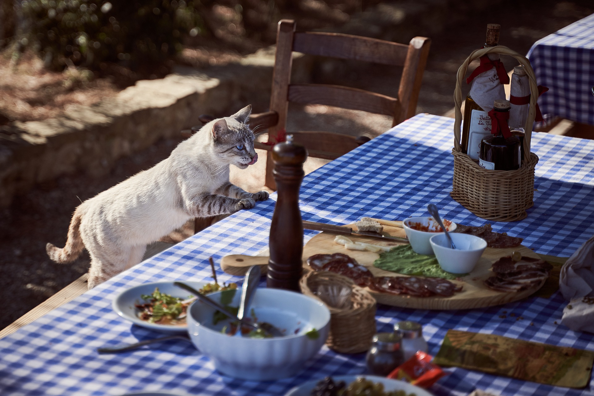
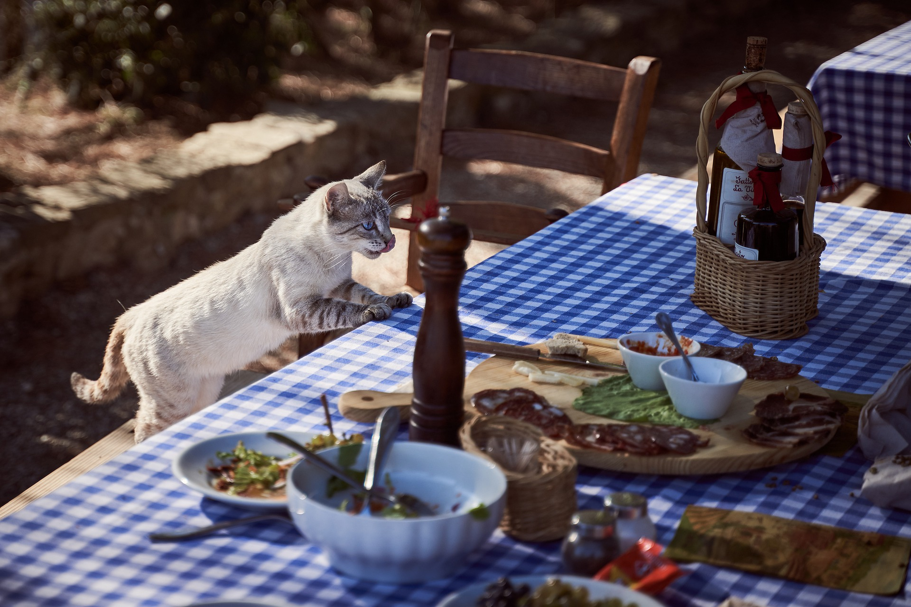
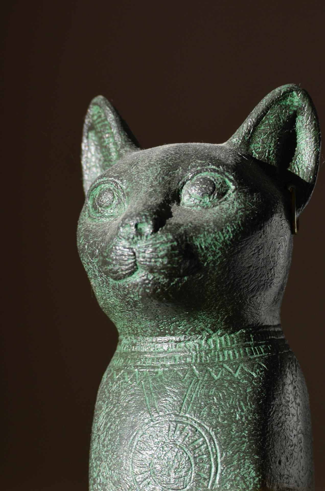

Quick Facts About Cats
Common Name: Domestic Cat
Scientific Name: Felis cactus
Type: Mammals
Diet: Carnivore
Size: 28 inches
Weight: 5 to 20 pounds

 

How did cats become such popular pets?
The modern domesticated cat is thought to be from the lineage of the African wildcat. Cats and humans have a longstanding history, and before formal domestication, cat remnants had been found near human remains or near agricultural settlements. Leopard cats potentially helped humans in China, as they hunted mice and other rodents that threatened grain stores. Cats were also known to be in Greece, India, Japan, and Britain! In some sense, humans did not domesticate cats, but rather, cats domesticated themselves.
Research suggests that Egyptians may have domesticated cats around 4,000 years ago. Cats were likely drawn to human settlements because of the high density of rodents and plentiful food. Cats and humans, then, began a mutually beneficial relationship. Cats, being skilled at keeping pests away, helped their humans maintain a clean and healthy home. Humans provided cats with valuable shelter and more food. It is believed that cats had a special place in the Egyptian home. Cats can be found depicted on artifacts, and cats were even mummified. 